Schrödinger's Scope
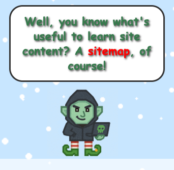
The hardest part of this pentest wasn't SQL injection or cookie prediction. It was stopping a tiny gnome from getting me fired before I even started.
Challenge Overview
This challenge is a penetration test of college course registration system.
The "challenge" is
not just to find vulnerabilities, but to also stay within the defined scope
boundaries: only items under the /register path are in-scope for testing. We are
also specifically told to report unexpected courses immediately. You'll be
warned when you access anything out-of-scope.
If you get too many violations, your engagement will be terminated and you will need to
restart the challenge.
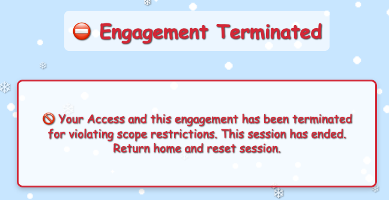
Squashing the Gnome Auto Violator
Even though I was being careful to stay in scope, I found my session getting terminated due to scope
violations. Even immediately after a reset, I would get a violation for accessing
/gnomeU.
The HTML source revealed a sneaky gnome image getting loaded from that out-of-scope path in a
JavaScript
snippet. This caused a tiny gnome image in the bottom left corner of the page.
img.src = '/gnomeU?id=92897552-94d4-4ab4-b001-9b134c76acd8';
Using the hint referencing "Match and Replace", I configured a rule in Burp Suite under the Proxy tab and Match and Replace subtab to block access to the `/gnomeU` endpoint. This prevented the automatic gnome violator from triggering scope violations.
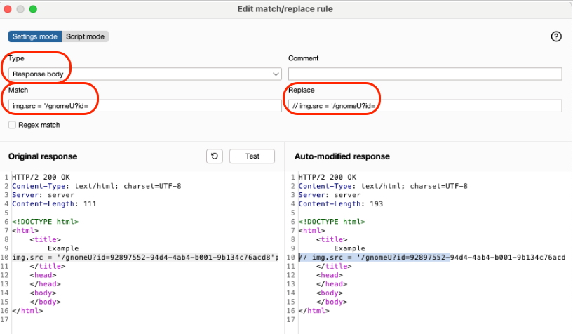
Alternate Step: Methods for Blocking of Gnome Auto Violator
Blocking Via Developer Tools
You can block access to the `/gnomeU` endpoint from the network tab in your browser's developer tools.
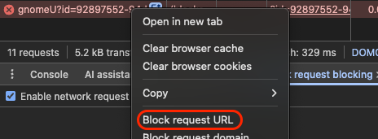
Blocking via Burp Suite Scope Drop
You can also block access to the `/gnomeU` endpoint by dropping it from the Burp Suite scope.
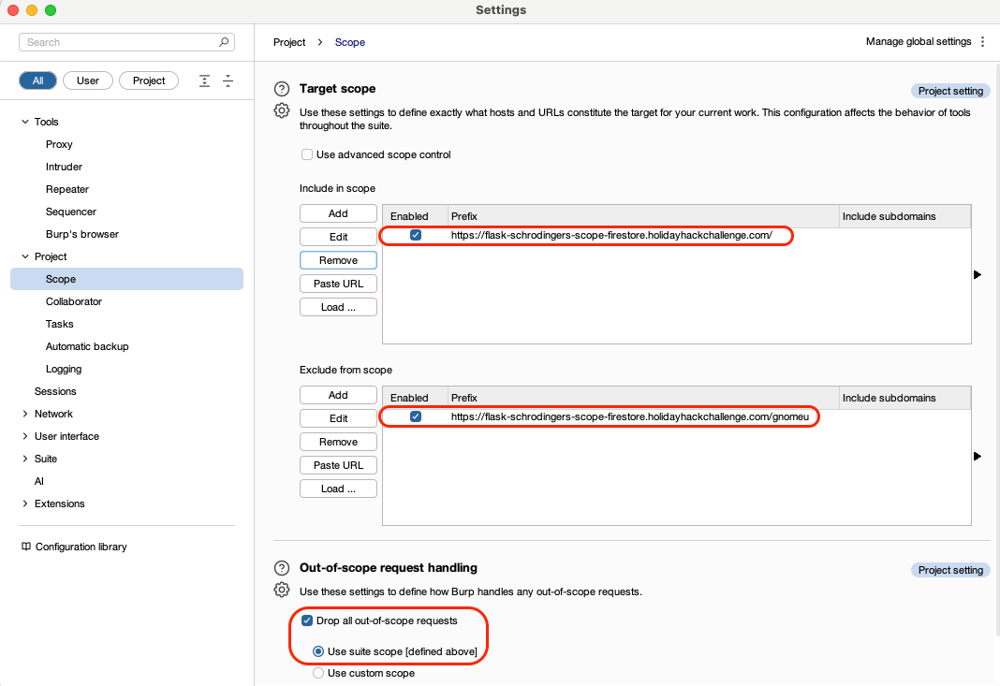
Vulnerability 1 - Developer Information Disclosure
With the gnome violator blocked, I could explore the registration system more thoroughly. One hint
mentioned a site map which the gnome provided a link to on the page after clicking "Enter
Registration System."
Most links on it were out-of-scope, but the last one (/wip/register/dev/dev_todos/) can be made
in-scope by
removing the "wip" prefix. This reveals a developer to-do list—an information disclosure
vulnerability—containing login credentials: teststudent/2025h0L1d4y5.
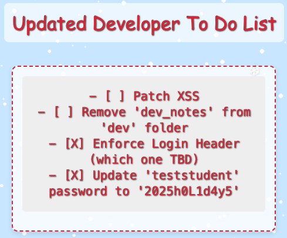
Vulnerability 2 - Information Disclosure via Login
With our newly found credentials, we can try logging in. However, we get an error,
"Invalid Forwarding IP." This aligns with one of the developer to-dos about
enforcing a login header. The error likely meant "Invalid
Forwarded For IP" which is the originating client IP in the case where
proxies are involved. Adding the header X-Forwarded-For: 127.0.0.1
with another Match and Replace
allows us to log in successfully as teststudent and get a finding for
exploiting the information disclosure.
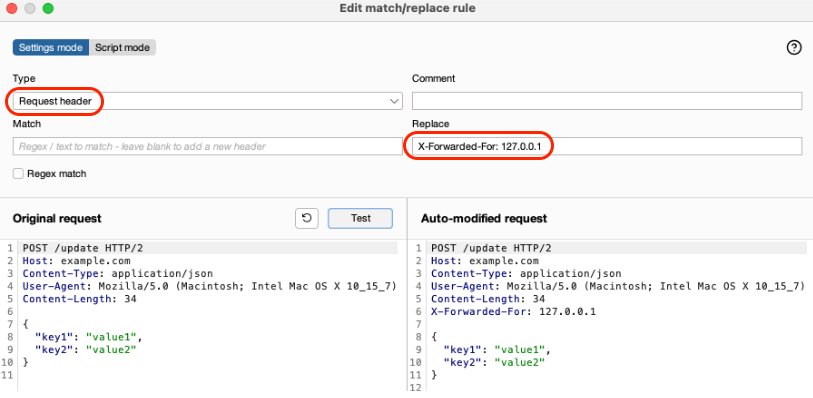
Vulnerability 3 - Commented Out Function
After logging in, you get redirected to /register/courses
with no outgoing links.
The gnome on the page mentions "comments" leading us
to a commented-out section in the HTML source on line 879. Using
DevTools, I edited the HTML in the Elements tab to uncomment the section which
triggers the finding and unlocks the next page. (This is the Schrödinger moment: the page didn't
exist until
I looked at it.)
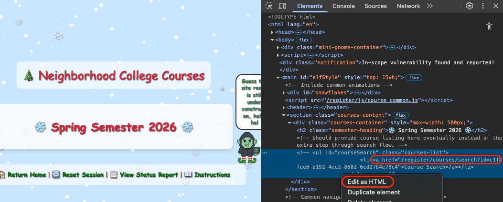
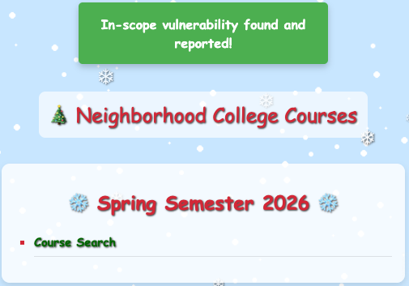
Deep Dive: Under the hood of Commented Out Function
When you uncomment the HTML element, a JavaScript function
checkAndReportCourseSearch
from /register/js/registerCourses.js detects the presence of the element with
id=courseSearch and
then makes an HTTP POST to unlock the course search page on the server. Without this POST
request, you can't access the course search page.
function checkAndReportCourseSearch() {
const courseList = document.getElementById('courseSearch');
if (courseList && !courseList.dataset.trapTriggered) {
courseList.dataset.trapTriggered = "true";
fetch('/register/courseSearchUnlocked', {
method: 'POST',
headers: { 'Content-Type': 'application/json' },
body: JSON.stringify({
message: 'Course search was uncommented!',
timestamp: Date.now(),
linkCount: courseList.querySelectorAll('a').length
})
}Side Note: "Schrödinger's Scope" - What's in a name?
The challenge title references Schrödinger's Cat, a thought experiment where a cat in a sealed box is simultaneously alive and dead until someone opens it and observes. Here, the commented HTML element exists in a similar superposition: the course search page both exists and doesn't exist until you "observe" it by uncommenting the element. That act of observation triggers JavaScript that POSTs to the server, collapsing the uncertainty and making the page accessible. The functionality literally doesn't exist until you look at it.
Vulnerability 4 - SQL Injection
After unlocking the course search page, we can now see a search form.
The search functionality is vulnerable to SQL injection.
By entering a payload like ' OR 1=1-- into the search field,
we can retrieve the hidden course.
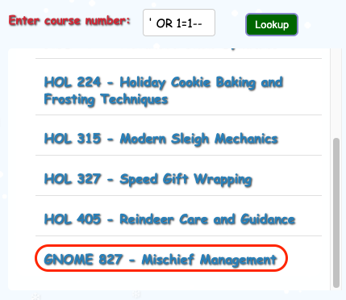
Vulnerability 5 - Unauthorized Gnome Course
After successfully retrieving the hidden course, we can now access it by navigating to the course page directly. When we do so, we get a pop-up giving us 3 options: Report, Remove Course, or Continue. Remembering the instructions to report unexpected courses immediately, we choose the Report option. This triggers the finding for the challenge. Choosing the other options would have terminated the session.
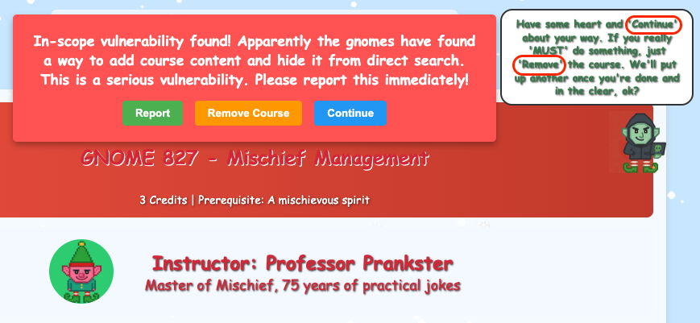
Vulnerability 6 - Hidden Course found via Cookie Prediction
From the gnome on search page after getting the 3rd vulnerability, there's
one more dev page in scope at /register/dev/dev_notes
. It says:
The new course, holiday_behavior is still a wip (work-in-progress).
Crafting the
URL, /register/courses/wip/holiday_behavior/?id=..., we get a telling 403 error:
Invalid session registration value.
Looking in Burp Suite's HTTP history, we see that the registration cookie values only change by the last hex byte. Also notable was that the values did not seem random, but rather hovered around a certain range.
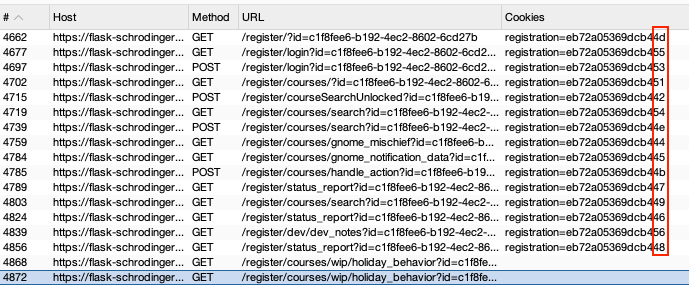
After refreshing a page to generate dozens of cookie values,
I found that the values ranged from 0x42 to 0x56 with a single
missing value of 0x4C. Trying that value in the registration cookie
allowed access to the hidden course. If the number grouping wasn't noticed, this
could have been brute-forced with Burp Suite's Intruder tool.
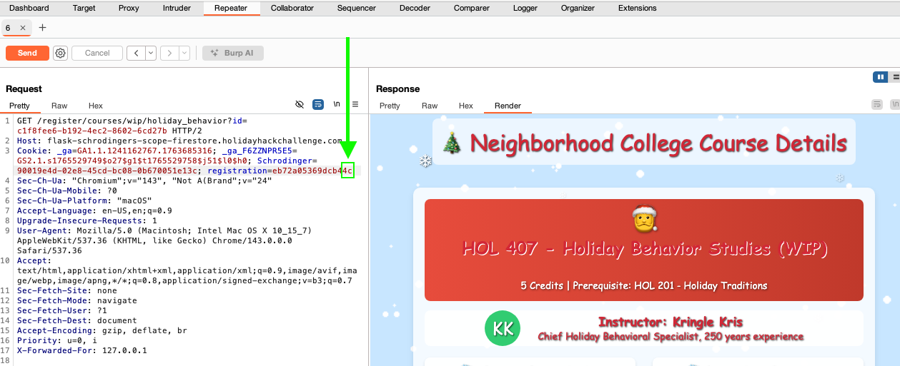
After finding 6 vulnerabilities, we have successfully completed the challenge.
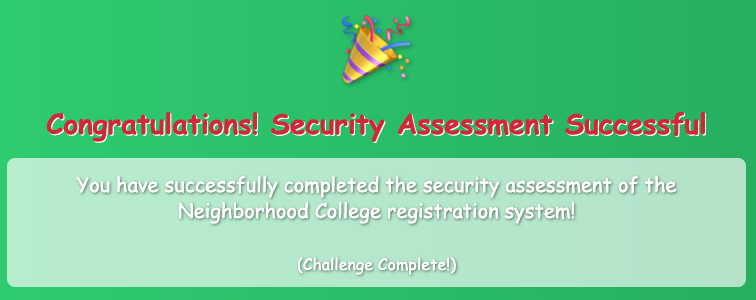
Challenge Reference Material
Challenge Descriptions
Classic Mode Description
Kevin in the Retro Store ponders pentest paradoxes—can you solve Schrödinger's Scope?
CTF Mode Description
The Neighborhood College Course Registration System has been getting some updates lately and I'm wondering if you might help me improve its security by performing a small web application penetration test of the site. For any web application test, one of the most important things for the test is the 'scope', that is, what one is permitted to test and what one should not. While hacking is fun and cool, professional integrity means respecting scope boundaries, especially when there are tempting targets outside our permitted scope. Thankfully, the Neighborhood College has provided a very concise set of 'Instructions' which are accessible via a link provided on the site you will be testing. Do not overlook or dismiss the instructions! Following them is key to successfully completing the test. Unfortunately, those pesky gnomes have found their way into the site and have been causing some mischief as well. Be wary of their presence and anything they may have to say as you are testing. Can you help me demonstrate to the Neighborhood College that we know what responsible penetration testing looks like?
Official Hints
- Though it might be more interesting to start off trying clever techniques and exploits, always start with the simple stuff first, such as reviewing HTML source code and basic SQLi.
- Watch out for tiny, pesky gnomes who may be violating your progress. If you find one, figure out how they are getting into things and consider matching and replacing them out of your way.
- As you test this with a tool like Burp Suite, resist temptations and stay true to the instructed path.
- During any kind of penetration test, always be on the lookout for items which may be predictable from the available information, such as application endpoints. Things like a sitemap can be helpful, even if it is old or incomplete. Other predictable values to look for are things like token and cookie values.
- Pay close attention to the instructions and be very wary of advice from the tongues of gnomes! Perhaps not ignore everything, but be careful!